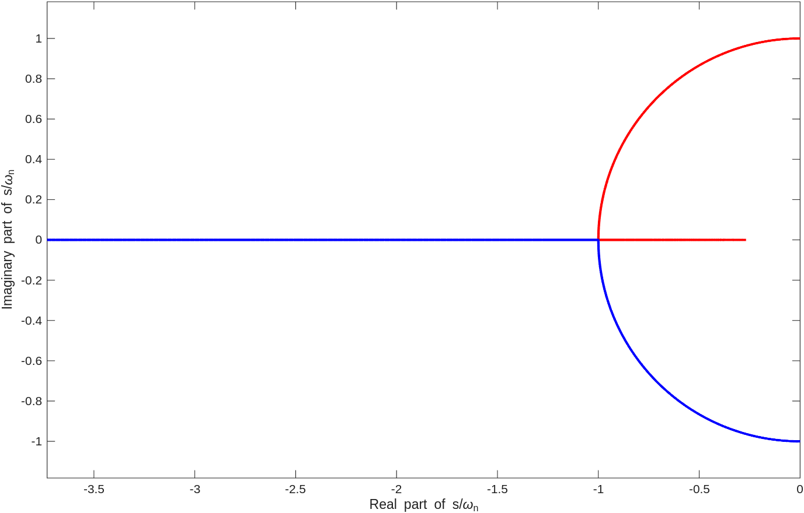
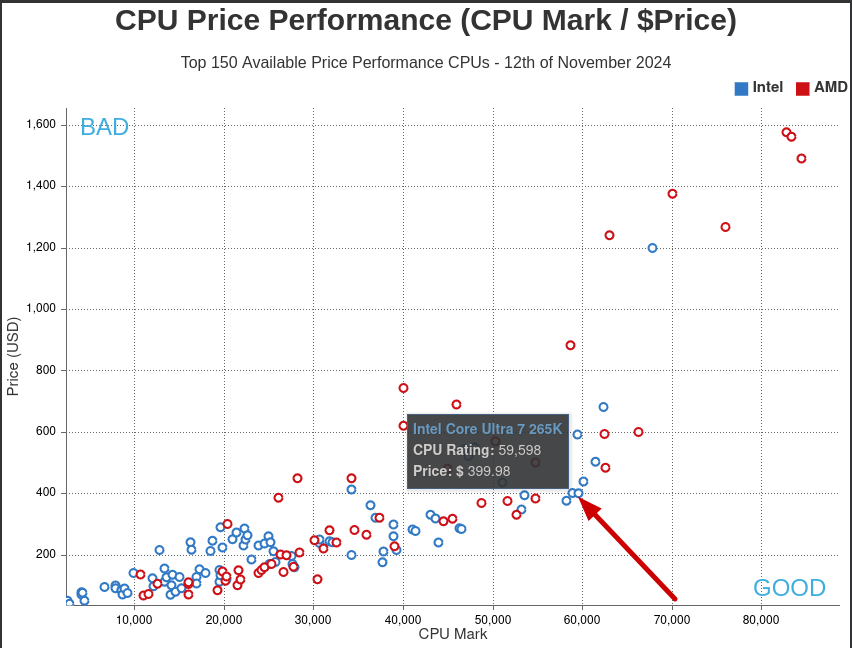
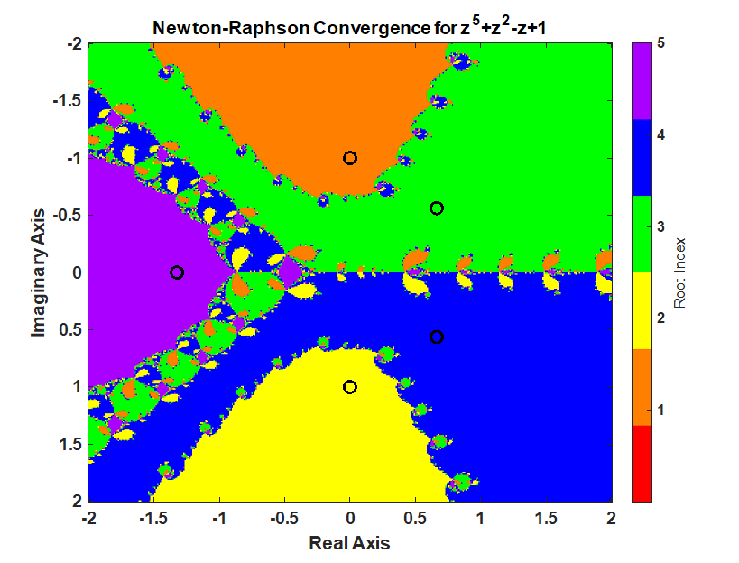
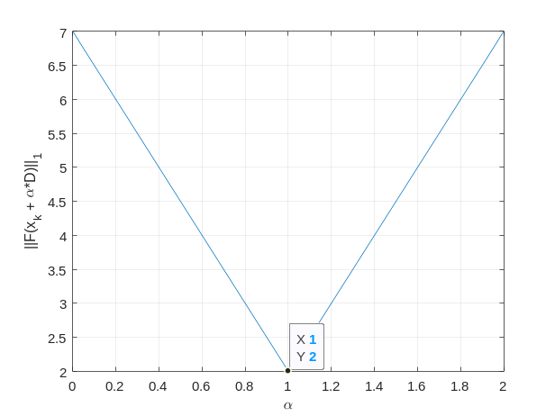
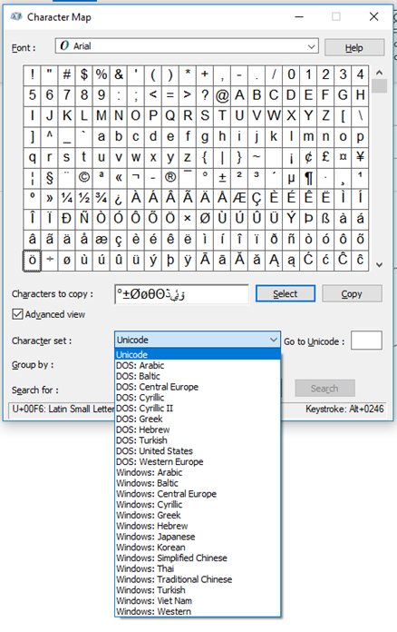
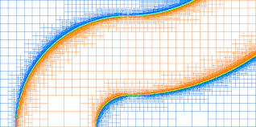
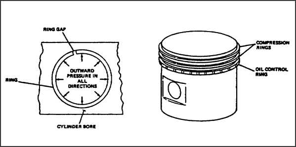
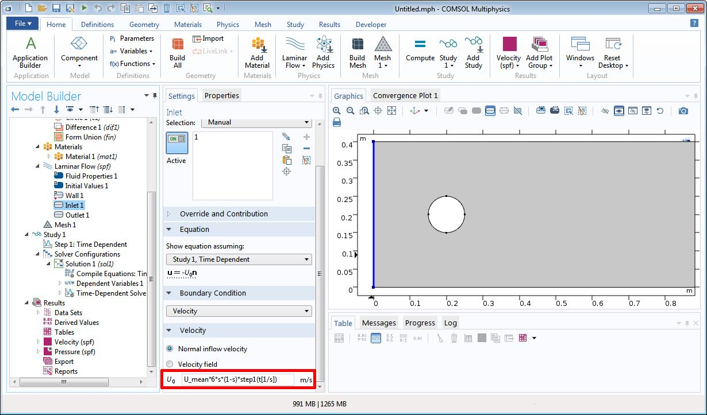
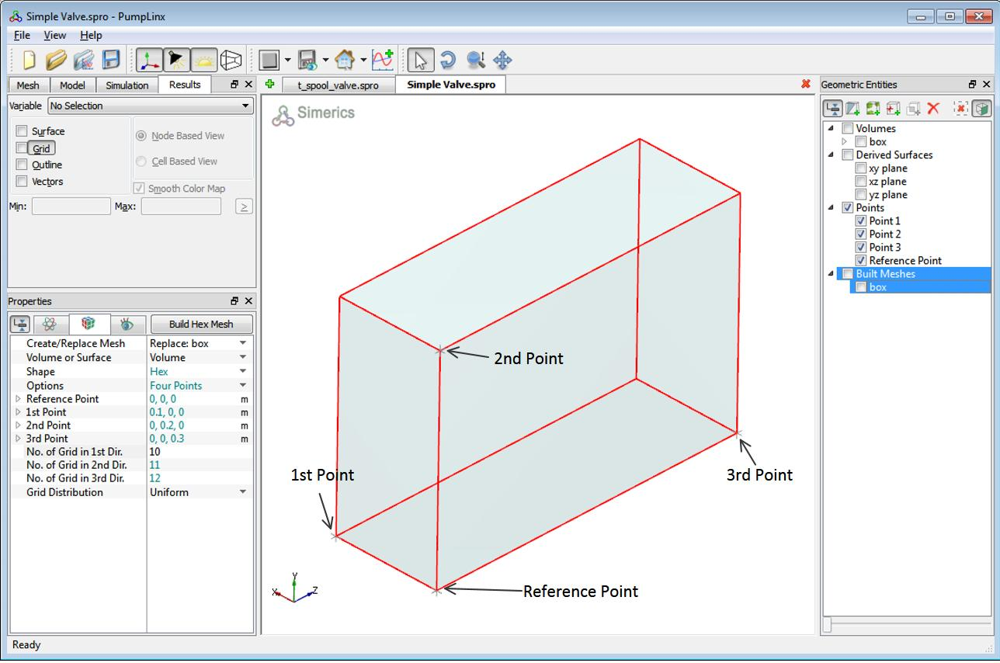
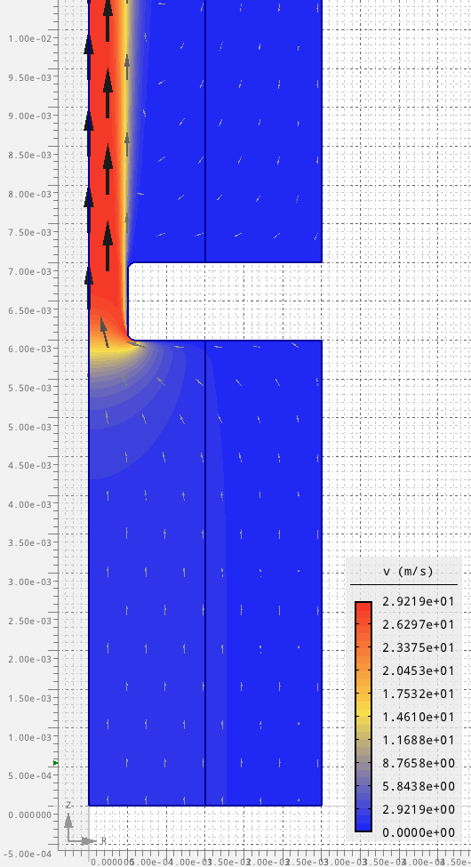

Jason H. Nicholson
Blog
Pages
Numerical Methods
System Identification
About
Blog
Categories
All
(41)
Summary of a second order cavitation model
This post was AI generated to help summarize the key aspects of a second-order cavitation model proposed by
(Liu, Wang, and Liu 2026)
. My quick take is this is more advanced…
Dec 21, 2025
The full cavitation model with only NCG (no vapor)
This note takes the
Singhal et al. (2002)
homogeneous-mixture
framework and explicitly
turns off the vapor/cavitation part
(no vapor phase, no phase change). What remains is…
Dec 21, 2025
Summary of the full cavitation model
This post is a code-oriented restatement of the
Full Cavitation Model
from
Singhal et al. (2002)
, with the core equations collected in one place.
Dec 20, 2025
Jake’s command line tools
I have a coworker named Jake who is a big fan of command line tools. Here some of the tools has recommended and I am learning. Below is a list of tools he recommended.
Dec 16, 2025

Understanding how damping ratio affects the poles of a second order system
In simulation and controls, its important to understand the details of a second order system. This post is how the damping ratio affect the poles of a second order system.
Dec 13, 2025
CAE Workstation setup
TODO:
Dec 5, 2025
Re-encoding a Google photo/video album
One common issue is running out of space on your smartphone or in the cloud because of photos and videos. Google provides “storage saver” settings that help, but they don’t…
Nov 30, 2025
Encoding many videos with ffmpeg, handbrake, and nvencc
I was working figure out the best combination of settings for ffmpeg, handbrake, and nvencc to encode a large number of videos. I wanted to compare the quality and file size…
Nov 28, 2025
Setting up a website and email - DNS, GitHub, Markdown
I recently migrated away from BlueHost and WordPress to a static site generator using GitHub Pages and Quarto. I moved my email from Bluehost to purelymail.com.The process…
Nov 28, 2025
Switching to Quarto from Franklin.jl
After initially migrating to Franklin.jl in the last several weeks, I migrated again to Quarto. Franklin.jl is okay but Quarto is better. Here are my reasons migrating:
Nov 28, 2025
Converting a docx to md - Math, tables, and html
I used pandoc to convert a word file to .md.
Nov 19, 2025
Setting Up a Franklin.jl Blog
UPDATE 2025-11-28: I migrated to Quarto because of issues like the one below.
Nov 11, 2025

Engineering Workstation Build
The main goal of this build is to make a custom engineering workstation that is appropriate for Scientific Computing (MATLAB), CAD (SolidWorks, OnShape, AutoDesk products…
Nov 12, 2024

Trust-Region-Dogleg and Newton-Raphson - A Quick Comparison on a 5th order polynomial
A Newton-Raphson iteration produces a fractal pattern in the complex plane and a Trust-Region-Dogleg method produces a smoother pattern in the complex which is desirable for…
Oct 24, 2021
Neural Networks. Controls, and System Identification
The current engineer atmosphere is buzzing about Neural Networks. The downside is that Neural Networks do not have a structure that is easily understandable and…
Jul 19, 2021
System Identification Resources
This blog post was turned into a page here: System Identification Resources
Jul 19, 2021
Linux HTML Documentation Index
On Ubuntu Linux, there is a package called “dhelp”. dhelp allows viewing the man and info pages through a web browser. I find this very useful. man2html and info2www are…
May 9, 2021

Nonlinear Equation System Solving Using Newton, Line Search, and LU factorization
A couple of weeks ago, I was inspired to revisit Newton’s method for solving nonlinear equations. I was reminded of my undergrad days when I read a paper by Madsen and Reid…
Apr 12, 2021
SSH, Windows, Web Servers, Linux, and Visual Studio Code
The hardest thing about trying to do something new with computers these days is that it is hard to focus on the one new thing I am trying to learn. I want to start working…
Dec 31, 2020
Object-Oriented Programming Decline - The Rise of other Paradigms
I listen to a lot of computer science-related talks and podcasts. Recently, I have seen a trend away from the object-oriented paradigm. The premise is fusing your data and…
Nov 15, 2020
Time and Quality Work
The more time you put into something, generally the higher the quality.
Nov 14, 2020
Reverse Engineering a Graph
Sometimes you need data from a graph. WebPlotDigitizer is one way you can extract the data in an automated way. Check out the video below.
Mar 5, 2020

Using the Shortname
The Shortname is a Windows way of dealing with non-ASCII characters and long file names and paths.
Feb 15, 2020
FFmpeg, The -crf Option, iPhone Videos, and Corporate Networks
I use FFmpeg on a regular basis for video, audio, and image-related editing. It is a command-line tool that goes from very simple to very complicated. I intend to stick with…
Jan 22, 2020
Short and Long Name VBA Functions
From time to time I write VBA. One of the things I have needed is what is called the short path. If you ever worked at the command line, it looks like what is shown below.…
Jan 22, 2020
How to Export Your VBA Macros for Storage in a GIT/SVN Repository
This shows a quick workflow I use to handle VBA Macros so that they are diffed properly in a GIT/SVN repository.
Dec 6, 2019
NASA T-MATS
An open source thermodynamic modeling package completed on behalf of NASA. The Toolbox for the Modeling and Analysis of Thermodynamic Systems (T-MATS) package offers a…
Jun 17, 2019
Comprehensive List of Lumped Parameter Simulation Software
Comprehensive List of Lumped Parameter Simulation Software
Jun 7, 2019
CAELinux
If you haven’t seen CAELinux, then I highly recommend it. There is a lot of CAE software available in a single Ubuntu Linux based distro.
May 29, 2019

CFD, FEA, and Multiphysics Simulation
I have been working on learning the Deal.ii library. Why? Because it is one of the most advanced finite element libraries I have come across. It can handle adaptive mesh…
May 29, 2019

Piston Rings Multiphysics Simulation
My main goal is to define the pressure-flow (PQ curve) past piston rings for a known oil and temperature. This is a Fluid-Structure Interaction problem (FSI).
May 29, 2019
Coding on a Saturday Night
Sitting here. Learning CLion IDE. Learning C++. Installing Rust. Checking the Julia Micro-Benchmarks to see where the languages are at https://julialang.org/benchmarks/.
Oct 21, 2018
A Comparison Between Differential Equation Solver Suites
Wow! The below article is must read if you solve differential equations on a regular basis.
Oct 16, 2018

Comsol is Great
Definitely one of my favorite CAE programs is Comsol. I will tell you why. But first, some background. I have used a lot of CAE software, to make a short list:
Mar 24, 2018

Simerics Pumplinx Hex Mesh Tutorial
Simerics Pumplinx sometimes doesn’t do a a good job in the help describing certain task such as Hex template meshing. Here is some graphics that may help.
Feb 16, 2018
Six Myths of Polynomial Interpolation and Quadrature
I found a profound paper written by Professor Lloyd N. Trefethen entitled Six Myths of Polynomial Interpolation and Quadrature. This paper is profound because it goes…
Feb 27, 2017
Creating a Custom Header in Wordpress
I used an image for header that I wanted to cite the photographer with a link to his website. There isn’t a clear way to do this in Wordpress tools. Therefore, I searched…
Feb 22, 2017
Transmission Line Method
Transmission Line Method (TLM) or Transmission Line Matrix method is an elegant technique used to solve lossless or lossy wave equations. Here I am gathering together…
Feb 22, 2017

My Introduction to Computational Fluid Dynamics (CFD)
I have been doing a lot of CFD lately. I have quickly learned that the information one can gain from CFD is far more insightful to the physicals then 0D, lumped parameter…
May 7, 2016
Differential Algebraic Equations (DAE’s)
Often Ordinary Differential Equations (ODE’s) are studied in engineering, especially system dynamics and control theory. However, there are many cases where the system is…
Feb 2, 2016
A Good Nerd Laugh
Donald Knuth wrote the program tex (pronounced tek). He cares about code correctness and therefore gave out a reward if you ever found a bug in tex. In 36 years, only 1289…
Jan 18, 2015
No matching items